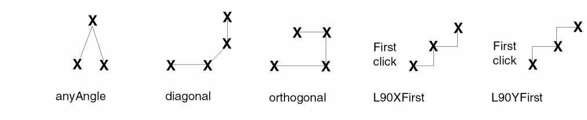
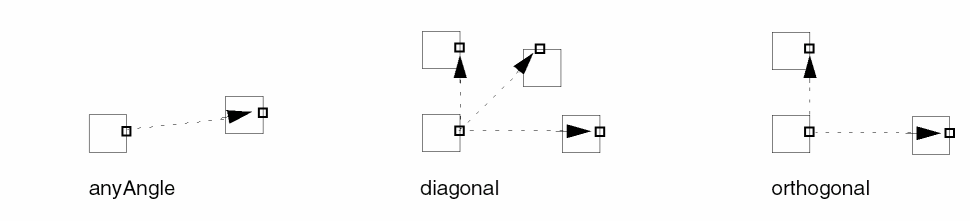
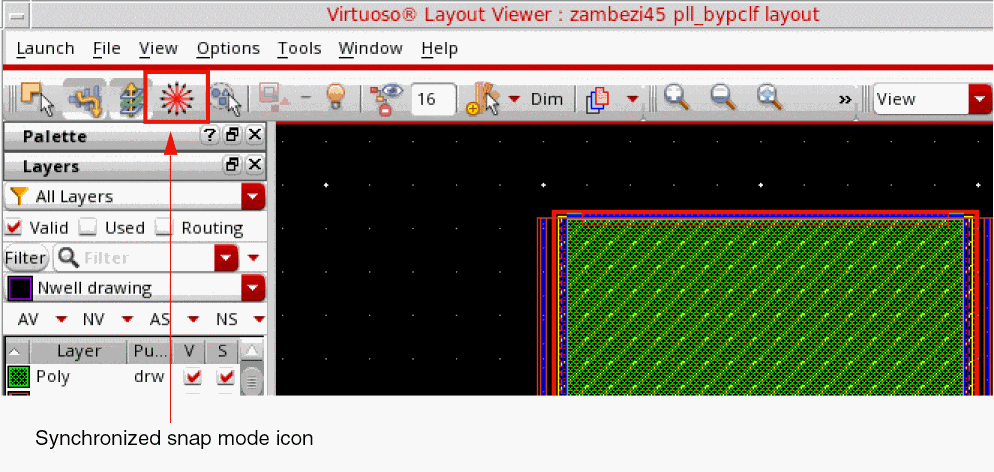
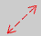

Setting Up the Snap Mode
The snap mode controls how the pointer locks to the grid as you create or edit objects.
-
The create commands use the snap mode to control the shape of segments as you create or reshape objects. The following figure illustrates the snap mode settings.
 -
The edit commands use the snap mode to control where you can move all or part of an object. The following figure illustrates the snap mode settings.

-
Choose Options – Display.
The Display Options form appears. - Set the snap modes for create and edit in the Snap Modes section:
- Click OK.
The synchronized Create/Edit Snap Mode icon on the Options toolbar displays the snap mode of the both the create and edit commands. It provides a single way to change both the create and edit snap modes, simultaneously.
When both the create and edit snap modes are synchronized, the appropriate icon (anyAngle, diagonal, or orthogonal) displays as the synchronized Create/Edit Snap Mode icon, as shown in the figure below.

You can cycle through the snap modes (anyAngle -> diagonal -> orthogonal) by pressing the
N bindkey or clicking the synchronized Create/Edit Snap Mode icon on the Options toolbar. The Create and Edit snap modes become unsynchronized if you change either the Create snap mode or the Edit snap mode in the Display Options form or on the Options toolbar. When the Create and Edit snap modes are unsynchronized, then the synchronized Create/Edit Snap Mode icon on the Options toolbar is displayed as a dotted diagonal double-headed arrow 
.Related Topics
Displaying Details or Outlines of Arrays
Saving, Loading, and Deleting Display Settings
Return to top